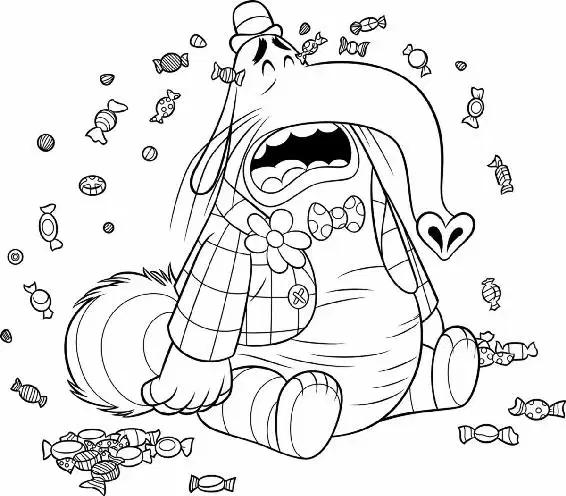

When the sky finally brightened, Joy was still dragging Sadness through the winding memory shelves. “Riley’s awake,” Joy said with a sigh. She couldn’t believe they had walked the entire night and they were still trying to get through Long-Term Memory. She wondered if they were any closer to getting out than they had been when they started.
Joy dropped the core memories and Sadness reached out to touch them. “Ah ah ah, don’t touch, remember? If you touch them, they stay sad,” Joy reminded her.
“Sorry,” said Sadness. “I won’t.”
Joy looked back to see all the bottom rows of the memories on the shelves they had passed: they were now all blue.
“Starting now,” Sadness added.
Joy dropped her head in her hands. “Ugh,” she groaned. “I can’t take much more of this.”
But then she brightened as she heard voices among the shelves. “Mind workers!” she said, racing off in search of the voices.
“But, Joy, we’re almost… ,” Sadness called after her. “Ohhh.”
Joy slipped down an aisle and found two pear-shaped mind workers wearing helmets and goggles. They were vacuuming memories off the shelves. One held a clipboard while the other sucked up memories with the vacuum. “Look at this,” said the first worker, pointing out some memory spheres. “Four years of piano lessons.”
“Yeah, looks pretty faded,” said the other worker, assessing them.
“You know what?” the first worker said. “Save ‘Chopsticks’ and ‘Heart and Soul’ and get rid of the rest.”
ZOOP! The worker used the vacuum to suck up the memories. Joy was shocked. She asked them why they were vacuuming up perfectly good memories.
The workers introduced themselves—they were Forgetters. They explained that their job was to clear out Riley’s faded memories and send them to the Memory Dump.
“Nothing comes back from the dump,” the Forgetter holding the clipboard said. “When Riley doesn’t care about a memory, it fades.”
“Fades?” Joy asked, confused. This was the first time she had heard about memories fading.
“Happens to the best of ’em,” the Forgetter said.
“Except for this bad boy!” the other Forgetter said with a chuckle. “This one will never fade.” Grinning, he pulled out a memory from a nearby shelf and showed it to Joy.
“The song from the gum commercial?” Joy asked. The memory was of the Tripledent gum commercial and it had a catchy tune.
The Forgetters laughed as they played the memory again. “You know, sometimes we send that up to Headquarters for no reason,” the first Forgetter said.
“It just plays in Riley’s head over and over again,” the other Forgetter added. “Like a million times!”
They laughed as they watched the commercial again, and cracked up even more as they sang along.
Joy watched as the workers put the memory on the shelf and pushed it toward the back. FWOOM! It shot through a tube out of the top of a shelf and up toward Headquarters.
Meanwhile, Riley was in her bedroom on her laptop, talking to her best friend Meg from Minnesota.
“Do you like it there?” Meg asked. “Did you feel any earthquakes? Is the Bridge cool?”
“Yeah,” Riley replied somberly. “It’s good.… What happened with the playoffs?”
Meg went on to tell Riley that the Prairie Dogs had won their first game. She told her about a new girl on the team. “She’s so cool,” Meg said.
“Oh, she did not just say that,” Disgust said, her voice dripping with attitude.
“A new girl?” Fear said, panicking. “Meg has a new friend already?!”
“GRRRRRRRRRR!” Anger growled.
“Hey, hey, stay happy!” Disgust coached. “We do NOT want to lose any more islands here, guys.”
But Meg continued to tell Riley how she and the new girl passed the puck to each other without even looking. “It’s like mind reading!” Meg said.
Anger grabbed the controls. “You like to read minds, Meg?” he shouted. “I got something for you to read right here!”
“Hey, no, no, no, what are you doing?” Disgust asked.
“Let’s just be calm for one second,” Fear advised as Anger pulled Fear’s nose out and let it snap back like a rubber band.
With no one holding him back, Anger pushed the gear full steam ahead.
“I gotta go,” Riley said, cutting Meg off. Then she slammed down the lid of her laptop and hung up on her.
Joy, still listening to the Forgetters laugh about their gum commercial prank, heard a horrible crrrreak from outside the memory shelves. She ran to see what it was.
“Oh no,” she cried, taking in the sight. Friendship Island was falling apart!
Joy looked down at the Friendship core memory in her arms; it was fading. Inside the memory sphere she could see the faint image of little Riley and Meg, skipping over cracks in the sidewalk, laughing and having fun.
Joy watched as the broken island completely sank into the darkness below. “Ohhh, not Friendship,” she said.
Sadness walked up to her, having witnessed the whole thing. “Oh, Riley loved that one,” she said. “And now it’s gone.” Sadness couldn’t help herself, and she continued. “Goodbye, Friendship. Hello, loneliness.”
Joy’s expression fell. Then she scanned the area. She eyed Hockey Island in the hazy distance and set her sights on a solution. “We’ll just have to go the long way,” she said.
“Yeah,” said Sadness. “The long… long… long way. I’m ready.” She collapsed onto the ground and kicked her leg up, offering it to Joy.
Joy sighed as she once again started to pull Sadness by the leg through the winding memory shelves. “There’s gotta be a better way,” she said.
She heard someone humming, and in the distance she could see a large pink elephant happily grabbing memories from the shelves.
